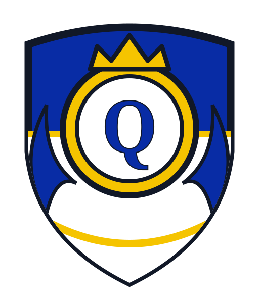
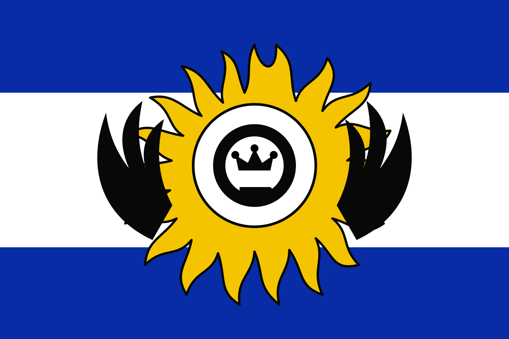

Q
Nombre oficial
Quequenlandia

Quequenlandia
Una nación, una identidad y una historia compartida. Este es el espacio central de sus símbolos, instituciones y cultura.
Quequenlandia reúne bajo una misma identidad a su comunidad, sus símbolos y sus instituciones. Este portal funciona como punto de referencia para la información nacional y sus futuras disposiciones.
Quequenlandia
Unidad, identidad y queque.
Una comunidad representada por sus emblemas y tradiciones.
La historia nacional conserva el origen de la comunidad quequense y el desarrollo de sus símbolos. Las fechas y acontecimientos oficiales se incorporarán a medida que sean establecidos en el registro histórico nacional.
Formación de la identidad quequense y de sus primeras expresiones comunitarias.
Adopción de un nombre, un lema y símbolos propios para representar a Quequenlandia.
Organización del portal nacional y recopilación de documentos, tradiciones y comunicados.
Este registro es una estructura histórica inicial. No asigna fechas ni acontecimientos que todavía no hayan sido confirmados.
El territorio constituye el espacio de referencia de la nación quequense. La delimitación, las localidades y la división administrativa se publicarán aquí cuando exista una definición oficial.
Sede prevista de las instituciones nacionales. Nombre oficial pendiente de incorporación.
Provincias, distritos o regiones: información pendiente de definición.
El mapa oficial se añadirá cuando se establezcan los límites y las localidades.
Los símbolos representan la soberanía, la prosperidad y la identidad de Quequenlandia.
Representa la grandeza.
Representa a los habitantes y la pureza.
Representa la prosperidad.
La Q coronada representa la soberanía; los laureles expresan la superioridad geopolítica.
La estructura institucional establece las funciones públicas y conserva la documentación oficial. Los cargos, autoridades y organismos concretos se publicarán una vez definidos.
Conducción y administración de los asuntos nacionales.
Elaboración y tratamiento de las normas nacionales.
Interpretación de las normas y resolución de controversias.
Áreas administrativas y culturales al servicio de la comunidad.
La cultura nacional reúne las expresiones, costumbres y celebraciones que construyen la identidad compartida.
Emblema cultural central y referencia del nombre y la identidad nacional.
El himno constituye una de las expresiones musicales representativas.
Este espacio reunirá celebraciones, relatos, tradiciones y archivos históricos.
La expresión musical de la identidad quequense.
El archivo nacional reunirá las normas fundamentales, actas y disposiciones que sean aprobadas para Quequenlandia.
Texto oficial todavía no incorporado.
Bandera, escudo y lema nacional.
Novedades y publicaciones del portal institucional.
El sitio incorpora nuevas secciones dedicadas a la historia, el territorio, las instituciones y el patrimonio cultural de Quequenlandia.